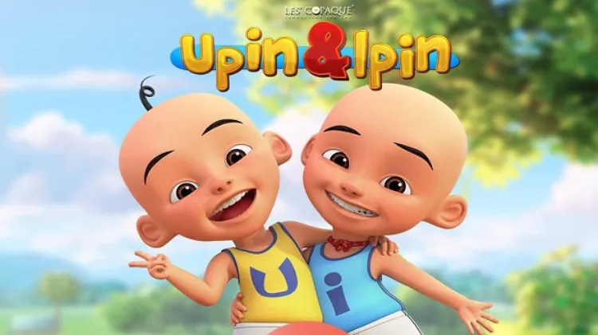

Sejarah Upin & Ipin

Upin & Ipin adalah sebuah serial televisi animasi kartun anak-anak Malaysia yang dirilis pada tanggal 14 September 2007 yang ditayangkan di TV9, RTM2, MNCTV dan Kids TV. Serial ini yang diproduksi oleh Les' Copaque Production. Awalnya film ini bertujuan untuk mendidik anak-anak agar lebih mengerti tentang Ramadan sebelum film Upin & Ipin Geng: Pengembaraan Bermula dirilis. Kini, Upin & Ipin sudah memiliki tujuh belas musim tayang. Di Indonesia, Upin & Ipin hadir di MNCTV dan Kids TV secara bersamaan, juga ditayangkan di stasiun televisi Berlangganan yaitu Disney Channel. Serial ini berdurasi selama 10-20 menit dalam setiap episodenya.
Asal-Mula : Awalnya, Upin & Ipin ditayangkan khusus untuk menyambut Ramadan pada tahun 2007 untuk mendidik anak-anak mengenai arti dan kepentingan dari bulan suci Ramadan. Kata Safwan, "Kami memulai seri animasi empat menit ini untuk menguji penerimaan pasar lokal serta mengukur bagaimana reaksi pada kemampuan penceritaan kami".Sambutan meriah terhadap kartun pendek ini mendorong Les' Copaque agar menerbitkan satu musim lagi menyambut bulan Ramadan yang seterusnya. Nizam percaya bahwa aspek kebudayaan Malaysia yang berlatarkan sebagai sebuah kampung yang sederhana pasti dapat menarik minat pasar internasional. Seperti pada kartun animasi Doraemon asal Jepang yang laris di seluruh dunia meskipun berlatarkan budaya setempat dan bukannya budaya internasional. Dan juga, reputasi Les' Copaque sebagai organisasi dikenal sejak terbentuknya popularitas Upin & Ipin yang bukan saja di Malaysia, namun juga di beberapa negara lain yang meng-import kartun ini khususnya Indonesia.
 Upin ketika disekolah
Upin ketika disekolah
 Upin & Ipin bermain
Upin & Ipin bermain
 Fizi dikedai uncle Muthu
Fizi dikedai uncle Muthu